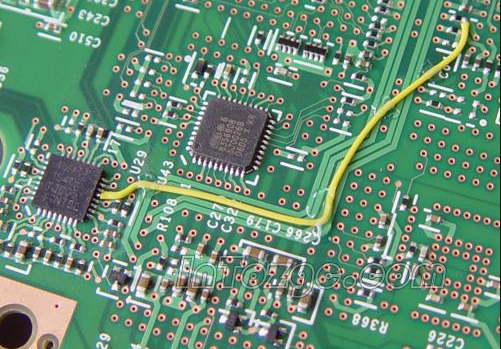
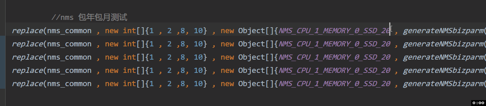
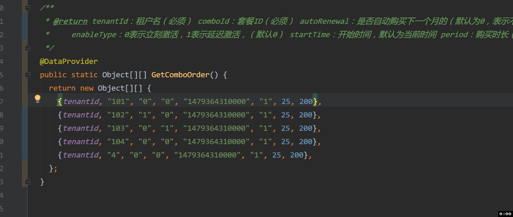

java-接口测试技巧
Contents
最近这段时间给负责的计费项目增加了不少接口自动化代码，略有些心得，分享一下。
bonus
张爱玲说过，出名要趁早，做接口自动化也是。之前定的流程是这个迭代内的功能要手工回归一下，等到上线了之后，在下个迭代初补全自动化接口。但是往往到了下个迭代开始的时候又开始了新的一轮需求评审啊，交互评审啊，等等杂七杂八的事，而且一个迭代的新增的接口，在上线前在联调，演练回归都要吐了，（特别是那种传入的参数超级多，有各种组合的情况）等到下个迭代根本再也不想碰它一碰，然后就被永久的积压在那边了。
所以既然要做，还不如趁早做，称之为演练享受联调时调通接口自动化的红利。在开发初期，定义好前后端接口，开发给出接口文档之后，就可以马上把测试里面的api那一部分给写好了，测试用例设计和逻辑校验部分到是可以放一放，等到开发服务都通了慢慢再做。
另外，现有的测试框架填api已经很方便了，不管是get还是post接口统一都是addParam。主要就是填写一下对应的参数传进去，当然甚至可以直接把开发control层的代码扒过来，对应接口要传什么参数直接一复制黏贴就好。
根据上次开会经验，这种兵马未动，粮草先行的做法，井宝宝，晓青姐，钟导都是先行者啊~
table driven method
代码大全第18章曾经讲到过表驱动法，这种方法如此重要以至于作者单独拎出来一章来讲。实际上，数据是数据，代码是代码，代码是数据，数据是代码。可以把一定的逻辑放到一种数据结构里，然后干掉不少 if 或者case。
那么到了testng这里比较经典的一个设计就是data provider了。它如此方便以至于其他例如python这种要写测试的话都需要用装饰器去模拟一个。具体来说在data provider里面你可以去构造某一个测试接口的用例表，比如计费的价格计算器，组合条件多种多样，规格不同，副本数不同，包年包月条件，时间长短不同都能影响到最后的价格。这要手工接口一个个试肯定死了。而且联调死过一次，还有演练等着你，还有双十一大促哦，1周年活动哦。。。
所以为了能够在演练享受到联调的红利，先事先写好一个测试的case，把各种参数传进去，最后验证一下返回的价钱对不对。然后以此条为模板，复制黏贴多份，为了都能覆盖到，各种规格都要出现一下，副本数情况验证一下，包年包月不同时间维度的都要覆盖一下。组合情况多了，全用例肯定是做不到了，那么考虑一下使用全对偶测试用例设计。好了，这张表终于被你设计出来了，它是数据，它也是代码，它内有一段逻辑，它是质量的守护神。
另外再提一句，data provider中还有一个用法是，比如接口的异常测试，传入的某些取值不应该存在的时候会返回一个错误码，比如为中文，标点符号，过长，全大写等等，这种接口异常校验其实差不多的，但你自己又想不到那么多种情况，可以偷偷的去扒一下别人的data provier里面的异常case，copy过来，齐活啦~久而久之，你就维护起一个你的接口异常case库。
另外，其实每个case都长得的差不多，一般每次都只是其中几列的参数变化一下，不如抽象成为一个common object，用一个replace 函数换掉固定的几列。这一招是从井宝宝的cloud pay项目中学来的。
|
|
Jump wire

飞线好像是电工电子里面的一种技术。那时读高中的时候要手工组装一个收音机，结果电路板上一个用来焊接的小铜片因为温度太高掉下来。这你让背后的二极管如何生脚啊。这时候同桌说了可以用等电位点的方法来解决，也就是找一个和掉下来铜片等电位的一个点，直接搭根线和二极管焊接住，比较dirty的解决方式。
一个标准的测试过程一般说来为 setup -> test -> verify -> teardown。比较理想的情况应该是测完了把本次测试生成的垃圾都回收掉。不过真正做起来的时候比较难，比如setup要新建一个用户，初始化这边的逻辑既不已知也不用求，也没现成的接口；teardown的时候清理用户的某些资源但是根本就没有delete接口啊。
这个时候之后自己搭一个飞线了。比如每次下订单或者购买资源包都会扣一下钱验证购买前后资源包、订单的钱有没有扣对，久而久之扣得地主家也没有余粮了。标准的做法是在teardown的时候去还原该租户bill_accout里面的钱。然而没有一个接口是直接设置租户余额的——正常用户租户余额变动都是涉及到充值、支付平台回调等，和下订单没有关系也不在验证的逻辑内——这个时候只好自己加一个dao，写一个方法专门来设置租户的余额。这个在晓青姐的demo项目里提供了脚手架。只不过每一个update都要写个方法，有点麻烦，每次其实就是传的sql语句有点变化，我稍稍修改了一下，用一个通用的sqlUpdate方法来统一处理，这样只要写sql语句就好了。
shortcut
知名常二路经济学家，腾讯荐股师子柳在《淘宝技术这十年》里面曾经说，那时候淘宝刚起步，他打了一份eclipse的快捷键就开始上马了。然后10年后我打了一份IntelliJ 的快捷键。
具体到接口测试中，首推IntelliJ 列编辑模式。就是在vim中你用ctrl+v 进入的编辑模式类似。主要之前说了，data provider 是一张表，每个case其实都是依赖一个模板，稍微有几个参数的变化，最适合列编辑了。
举个例子，规格不同价格不同。在我写case的时候，常用的操作如下，把一个case写好后复制多份，从常量表里面copy规格，从数据库中copy价格：

有时候没对齐，不方便列编辑。这时候推荐一个Align插件。选中之后可以按照逗号分隔符对齐，在列编辑copy数据库中的价格。

还有各种重构快捷键，抽取参数，抽取常量，抽取方法等等，就不一一赘述了。
Author smasterfree
LastMod 2017-11-24